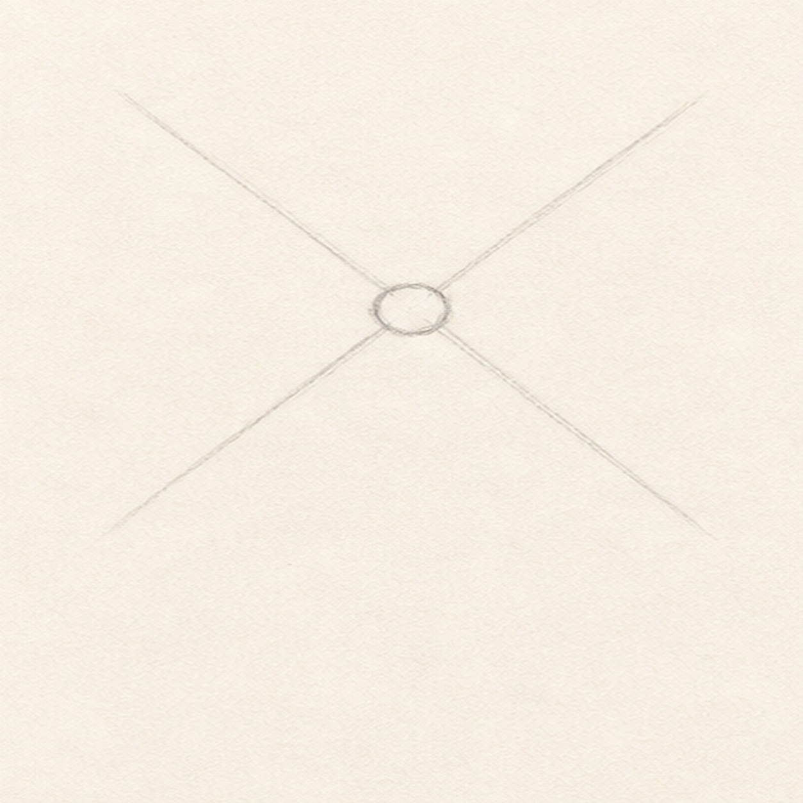
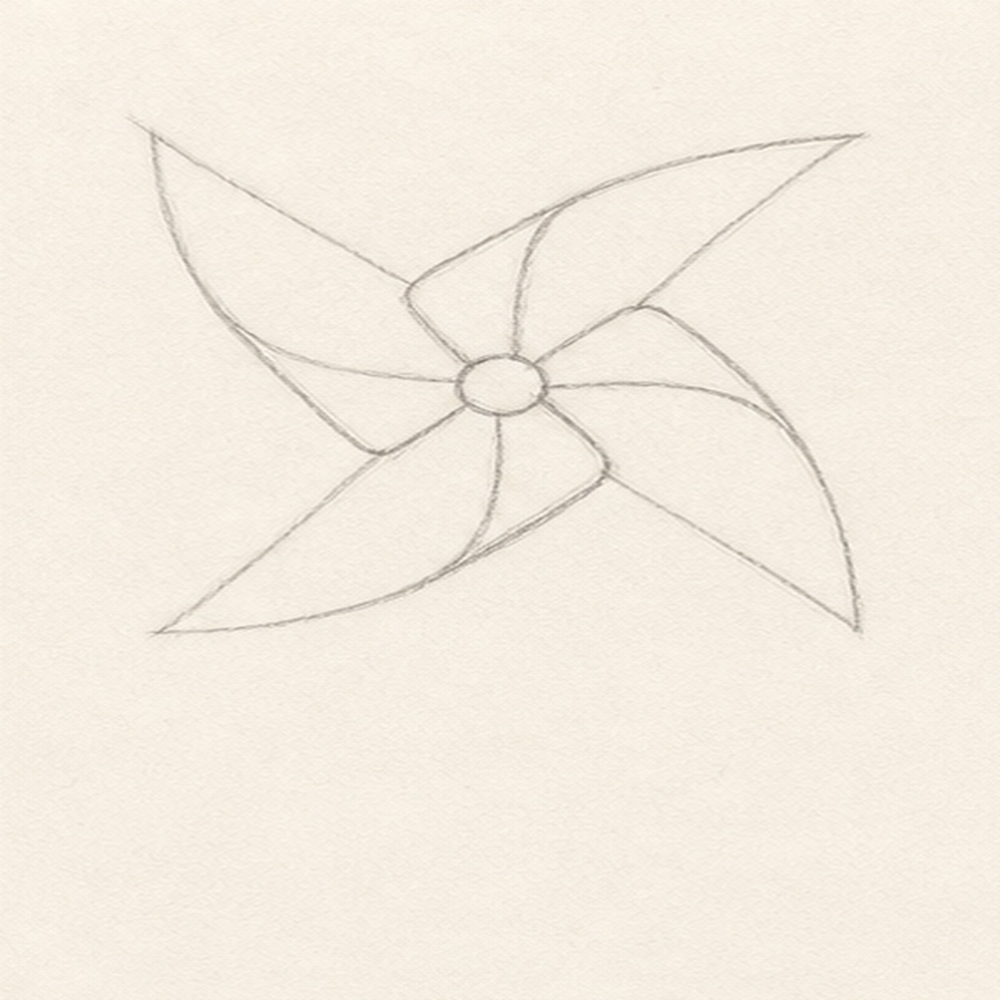
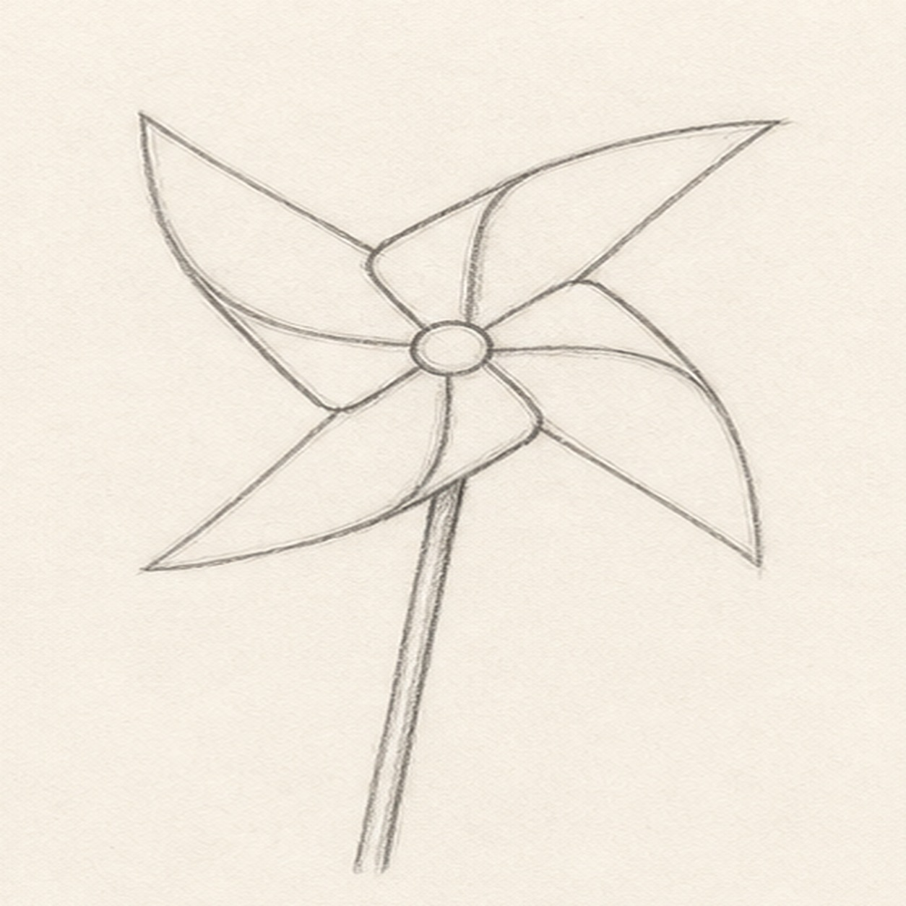
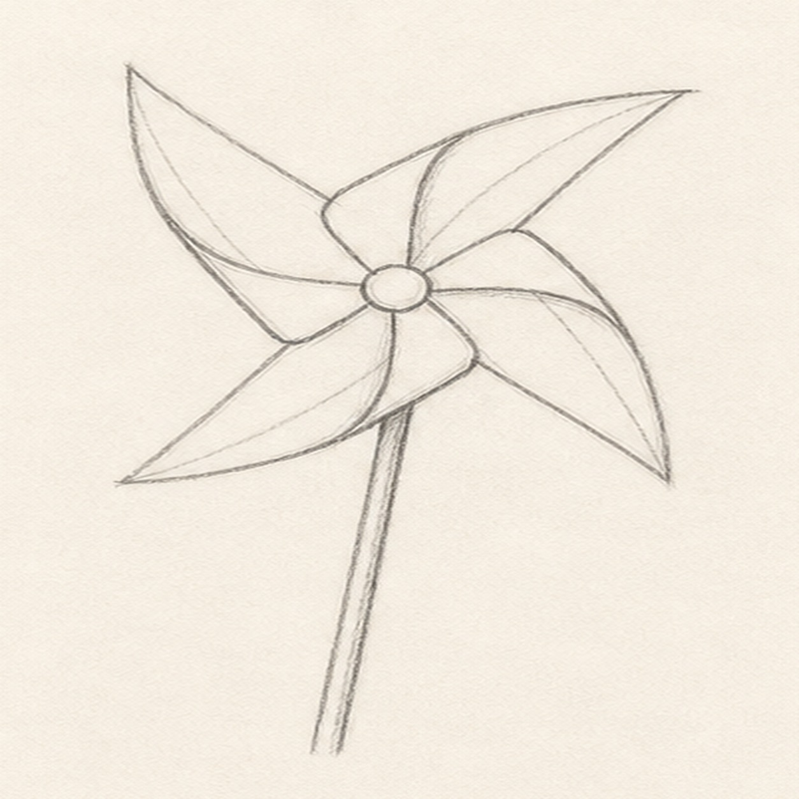
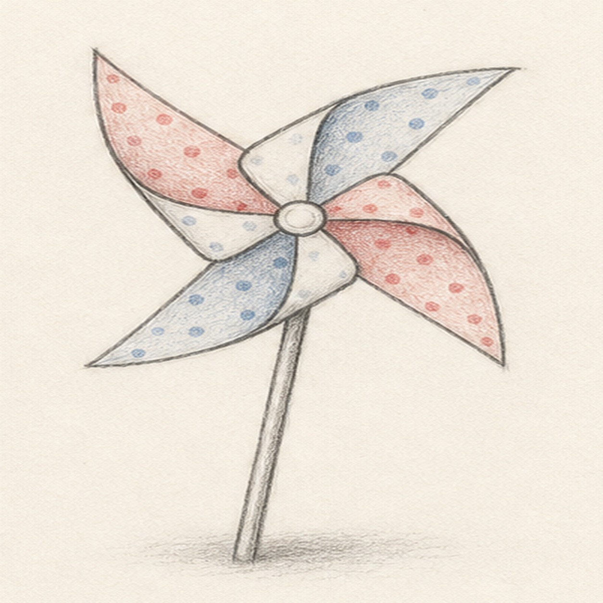

Pencil ready?
Let's draw a backyard pinwheel
Treat this as one small practice round: build the subject lightly, notice the shapes, then darken only the lines that help the finished sketch.
-
01

Place the hub
Draw a small circle for the hub, then sketch two light diagonal guide lines through it.
Sketch tip: Keep the guides pale. They only help you aim the blade points in four directions.
-
02

Swing out the blades
Wrap four curved triangle blades around the hub, letting each blade bend slightly like folded paper.
Sketch tip: Each blade should start near the center and sweep outward. Uneven curves make the pinwheel feel handmade.
-
03

Add the stick
Refine the blade outside edges, then draw a slender stick dropping down from behind the hub.
Sketch tip: Let the stick tuck behind the pinwheel. That overlap keeps the center from getting too busy.
-
04

Fold the paper
Add short interior fold lines on the blades so each paper flap looks curled.
Sketch tip: Follow the blade curve instead of drawing straight stripes. The fold lines should support the spin shape.
-
05

Pattern the breeze
Add small dot patterns, tint alternating blades red and blue, and sketch a soft shadow near the stick.
Sketch tip: Color lightly so the pencil texture still shows. The pinwheel should feel bright, not filled in solid.
-
06

Finish the pinwheel
Darken the keeper contours, clarify the folds, and deepen the color and shadow already on the page.
Sketch tip: Stop before adding extra ribbons or background details. The folded blades and simple stick are enough.